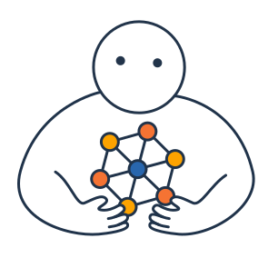

projetos
VÉRTICE
O laboratório está testando uma nova forma de gerenciamento de equipe e projetos para entregar resultados, no máximo, a cada seis semanas. Entre os ciclos de trabalho, sempre revisamos nosso planejamento e definimos as iniciativas do período seguinte. Abaixo, listamos alguns exemplos de apostas para 2020.
PRIMEIRO CICLO DE INOVAÇÃO ABERTA
Conduzido por parceiro, a ser contratado para realizar as etapas, acelerar os participantes e gerenciar o desenvolvimento de protótipos. Inicialmente, quatro desafios, da atividade-fim ou meio, a serem definidos internamente e validados pelo PGJ. Dependência externa: atos de contratação pela Secretaria-Geral.
TESTES DO FLUXO DE TRANSFORMAÇÃO E SUPORTE AOS ÓRGÃOS DE EXECUÇÃOAtendimento a órgãos de execução, na Capital e no interior, para solução de desafios de alto impacto e alinhados com o planejamento tático do MPRJ. Proposta de atuação experimental e em parceria com GATE, CENPE, CSI, CADG e IEP.
PRIMEIRO PROTÓTIPO BÚSSOLA GESTÃO HOSPITALARFluxo de coleta automatizada, visualizações e alertas quanto a um grupo de indicadores críticos para o acompanhamento e fiscalização da gestão de hospitais públicos. Dependência externa: obtenção dos dados, por iniciativa (judicial se preciso) dos órgãos de execução.
PRIMEIRO PROTÓTIPO BÚSSOLA BAÍA DE GUANABARA
Fluxo de coleta automatizada, visualizações e alertas quanto a questões críticas para a fiscalização do TAC da Baía de Guanabara. Dependência externa: obtenção dos dados, por iniciativa (judicial se preciso) dos órgãos de execução.
rede e cultura
INOVA FAGULHA
Primeiro teste de protótipo para difusão de cultura e método de trabalho do Inova e criação de rede interna e externa de apoiadores. Formalização de programa de bolsas para pesquisa aplicada em inovação. Dependências externas: Secretaria-Geral para elementos de coworking; IEP para financiamento e formalização de programa de bolsas.
ATÉ 4 EVENTOS SACADA
Eventos em formato alternativo na varanda do Inova, combinando troca de ideias e atividades de cocriação sobre temas de inovação – em regra, relacionados aos projetos em andamento.
SEGUNDO EVENTO ANTENA_MPRJ
Segunda edição de evento com grandes expoentes do pensamento em inovação e gestão pública, com feira de projetos.
I ENCONTRO DE INOVAÇÃO E CONTROLE
Organização de evento para reunir o MP brasileiro, Tribunais de Contas e outras instituições de controle para fomento de uma rede de laboratórios de inovação, troca de experiências, compartilhamento de recursos e formação de times interinstitucionais para solução de desafios comuns.